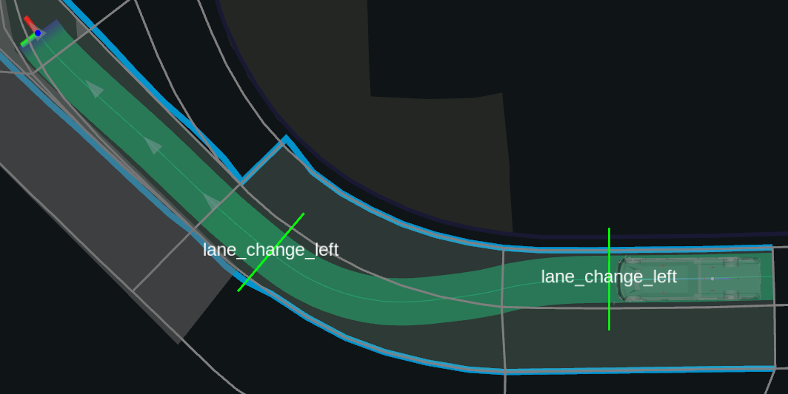
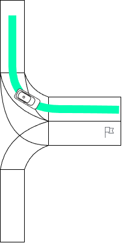

Lane Change design#
The Lane Change module is activated when lane change is needed (Ego is not on preferred lane), and activation requirements are satisfied.
Lane Change Requirements#
Prerequisites#
The type of lane boundary in the HD map has to be one of the following:
- Dashed lane marking: Lane changes are permitted in both directions.
- Dashed marking on the left and solid on the right: Lane changes are allowed from left to right.
- Dashed marking on the right and solid on the left: Lane changes are allowed from right to left.
allow_lane_changetags is set astrue
Activation Conditions#
The lane change module will activate under the following conditions :
- The ego-vehicle is NOT on a
preferred_lane. - Distance to start of
target_laneis less thanmaximum_prepare_length - The ego-vehicle is NOT close to a regulatory element:
- Distance to next regulatory element is greater than
maximum_prepare_length. - Considers distance to traffic light. (If param
regulation.traffic_lightis enabled) - Considers distance to crosswalk. (If param
regulation.crosswalkis enabled) - Considers distance to intersection. (If param
regulation.intersectionis enabled)
- Distance to next regulatory element is greater than
Warning
If ego vehicle is stuck, lane change will be enabled near crosswalk/intersection. Ego is considered stuck if it stops more than stuck_detection.stop_time. Ego is considered to be stopping if its velocity is smaller than stuck_detection.velocity.
The following figure illustrates the logic for checking if lane change is required:
![uml diagram]()
Ready Conditions#
- Valid lane change path is found.
- Lane change path is safe; does not collide with other dynamic objects.
- Lane change candidate path is approved by an operator.
Implementation#
Lane change module uses a sampling based approach for generating a valid and safe lane changing trajectory. The process for generating the trajectory includes object filtering, metrics sampling, candidate paths generation, and lastly candidate paths evaluation. Additionally the lane change module is responsible for turn signal activation when appropriate, and inserting a stop point when necessary.
Global Flowchart#
The following diagram, illustrates the overall flow of the lane change module implementation.
![uml diagram]()
The lane change module first updates the necessary data for lane change such as lanes information and transient data. Then filters the detected objects to be used for safety evaluation (see Object Filtering).
If the lane change requirements are met, the turn signal is activated and the lane change module will proceed to generating a candidate path. Lane change candidate paths are generated by sampling different metrics and evaluating the validity of the corresponding generated trajectory. More details can be found in Generating Lane Change Candidate Path;
When a valid candidate path is generated, a safety evaluation is conducted to check for any risk of collision or hindrance. The details of the safety evaluation can be found in Safety Checks.
Once a valid and safe candidate path is found, the drivable area is generated and the path is executed. While executing the lane change maneuver, the safety of the approved path is continuously monitored to ensure there is no chance of collision or other hindrance. If the approved path remains safe and completion checks are met (see Lane Change Completion Checks) the module will transit to SUCCESS state. In case the approved path is deemed to be no longer safe, the lane change module will attempt to abort the lane change maneuver (see Aborting Lane Change). When the lane change maneuver is aborted successfully the module will transit to FAILURE state, and the process is restarted.
If the lane change module fails to find a valid and safe candidate path, the module will continue executing the previously approved path and insert a stop point along the path where appropriate, for more details refer to Stopping Behavior.
Generating Lane Change Candidate Path#
The lane change candidate path is divided into two phases: preparation and lane-changing. The following figure illustrates each phase of the lane change candidate path.

The following chart illustrates the process of sampling candidate paths for lane change.
![uml diagram]()
The following chart demonstrates the process of generating a valid candidate path with path shifter method.
![uml diagram]()
Prepare Phase#
The prepare phase is the first section of the lane change candidate path and the corresponding prepare segment consists of a subsection of the current reference path along the current lane. The length of the prepare phase trajectory is computed as follows.
prepare_distance = current_speed * prepare_duration + 0.5 * lon_acceleration * prepare_duration^2
The prepare phase trajectory is valid if:
- The length of the prepare phase trajectory is greater than the distance to start of target lane
- The length of the prepare phase trajectory is less than the distance to terminal start point
Lane-changing Phase#
The lane-changing phase consists of the shifted path that moves ego from current lane to the target lane. Total duration of lane-changing phase is computed from the shift_length, lateral_jerk and lateral_acceleration.
In principle, positive longitudinal acceleration is considered during lane-changing phase, and is computed as follows.
lane_changing_acceleration = std::clamp((max_path_velocity - initial_lane_changing_velocity) / lane_changing_time,
0.0, prepare_longitudinal_acc);
Where max_path_velocity is the current path speed limit.
Warning
If the longitudinal acceleration of prepare phase is negative (slowing down), AND ego is near terminal, then the lane-changing longitudinal acceleration will also be negative and its value is decided by the parameter lane_changing_decel_factor.
The lane changing distance is then computed as follows.
lane_changing_distance = initial_lane_changing_velocity * lane_changing_duration + 0.5 * lon_acceleration * lane_changing_duration^2
The backward_length_buffer_for_end_of_lane is added to allow some window for any possible delay, such as control or mechanical delay during brake lag.
Sampling Multiple Candidate Paths#
In order to find a valid and safe lane change path it might be necessary to generate multiple candidate path samples. The lane change module does this by sampling one or more of: prepare_duration, longitudinal_acceleration, and lateral_acceleration.
Prepare Duration Sampling#
In principle, a fixed prepare duration is assumed when generating lane change candidate path. The default prepare duration value is determined from the min and max values set in the lane change parameters, as well as the duration of turn signal activation.
For example, when the lane change module first activates and turn signal is activated then prepare duration will be max_prepare_duration, as time passes and a path is still not approved, the prepare duration will decrease gradually down to min_prepare_duration. The formula is as follows.
prepare_duration = std::max(max_prepare_duration - turn_signal_duration, min_prepare_duration);
Note
When the current ego velocity is lower than the min_lane_change_velocity, the min_prepare_duration is adjusted to ensure sufficient time for reaching min_lane_change_velocity assuming max_longitudinal_acceleration.
Warning
The value of the prepare duration impacts lane change cancelling behavior. A shorter prepare duration results in a smaller window in which lane change maneuver can be cancelled. See Evaluating Ego Vehicle's Position to Prevent Abrupt Maneuvers for more details.
When ego vehicles is close to the terminal start, we need to sample multiple prepare duration values to find a valid and safe path. In this case prepare duration values are sampled starting from max_prepare_duration down to 0.0 at a fixed time interval of 0.5 s.
Longitudinal Acceleration Sampling#
In principle, maximum longitudinal acceleration is assumed for generating lane change candidate path. However in certain situations, we need to sample multiple longitudinal acceleration values to find a valid and safe candidate path. The lower and upper bounds of the longitudinal acceleration sampled are determined from the values specified in the lane change parameters and common planner parameters, as follows
maximum_longitudinal_acceleration = min(common_param.max_acc, lane_change_param.max_acc)
minimum_longitudinal_acceleration = max(common_param.min_acc, lane_change_param.min_acc)
where common_param is vehicle common parameter, which defines vehicle common maximum longitudinal acceleration and deceleration. Whereas, lane_change_param has maximum longitudinal acceleration and deceleration for the lane change module. For example, if a user set and common_param.max_acc=1.0 and lane_change_param.max_acc=0.0, maximum_longitudinal_acceleration becomes 0.0, and the lane change does not accelerate in the lane change phase.
The longitudinal_acceleration_resolution is determine by the following
longitudinal_acceleration_resolution = (maximum_longitudinal_acceleration - minimum_longitudinal_acceleration) / longitudinal_acceleration_sampling_num
The chart below illustrates the conditions under which longitudinal acceleration values are sampled.
![uml diagram]()
while the following describes the process by which longitudinal accelerations are sampled.
![uml diagram]()
The following figure illustrates when longitudinal_acceleration_sampling_num = 4. Assuming that maximum_acceleration = 1.0 and minimum_acceleration = 1.0 then a0 == 1.0, a1 == 0.5, a2 == 0.0, a3 == -0.5 and a4 == -1.0. a0 is the expected lane change trajectory when sampling is not required.

Which path will be chosen depends on validity and safety checks.
Lateral Acceleration Sampling#
In addition to sampling longitudinal acceleration, we also sample lane change paths by varying the lateral acceleration. Lateral acceleration affects the lane changing duration, a lower value results in a longer trajectory, while a higher value results in a shorter trajectory. This allows the lane change module to explore shorter trajectories through higher lateral acceleration when there is limited space for the lane change.
The maximum and minimum lateral accelerations are defined in the lane change parameter file as a map. The range of lateral acceleration is determined for each velocity by linearly interpolating the values in the map. Let's assume we have the following map
| Ego Velocity | Minimum lateral acceleration | Maximum lateral acceleration |
|---|---|---|
| 0.0 | 0.2 | 0.3 |
| 2.0 | 0.2 | 0.4 |
| 4.0 | 0.3 | 0.4 |
| 6.0 | 0.3 | 0.5 |
In this case, when the current velocity of the ego vehicle is 3.0, the minimum and maximum lateral accelerations are 0.25 and 0.4 respectively. These values are obtained by linearly interpolating the second and third rows of the map, which provide the minimum and maximum lateral acceleration values.
Within this range, we sample the lateral acceleration for the ego vehicle. Similar to the method used for sampling longitudinal acceleration, the resolution of lateral acceleration (lateral_acceleration_resolution) is determined by the following:
lateral_acceleration_resolution = (maximum_lateral_acceleration - minimum_lateral_acceleration) / lateral_acceleration_sampling_num
Terminal Lane Change Path#
Depending on the space configuration around the Ego vehicle, it is possible that a valid LC path cannot be generated. If that happens, then Ego will get stuck at terminal_start and not be able to proceed. Therefore we introduced the terminal LC path feature; when ego gets near to the terminal point (dist to terminal_start is less than the maximum lane change length) a terminal lane changing path will be computed starting from the terminal start point on the current lane and connects to the target lane. The terminal path only needs to be computed once in each execution of LC module. If no valid candidate paths are found in the path generation process, then the terminal path will be used as a fallback candidate path, the safety of the terminal path is not ensured and therefore it can only be force approved. The following images illustrate the expected behavior without and with the terminal path feature respectively:


Additionally if terminal path feature is enabled and path is computed, stop point placement can be configured to be at the edge of the current lane instead of at the terminal_start position, as indicated by the dashed red line in the image above.
Generating Path Using Frenet Planner#
Warning
Generating path using Frenet planner applies only when ego is near terminal start
If the ego vehicle is far from the terminal, the lane change module defaults to using the path shifter. This ensures that the lane change is completed while the target lane remains a neighbor of the current lane. However, this approach may result in high curvature paths near the terminal, potentially causing long vehicles to deviate from the lane.
To address this, the lane change module provides an option to choose between the path shifter and the Frenet planner. The Frenet planner allows for some flexibility in the lane change endpoint, extending the lane changing end point slightly beyond the current lane's neighbors.
The following table provides comparisons between the planners
| With Path Shifter | With Frenet Planner |
 |
 |
 |
 |
|  |  |
Note
The planner can be enabled or disabled using the frenet.enable flag.
Note
Since only a segment of the target lane is used as input to generate the lane change path, the end pose of the lane change segment may not smoothly connect to the target lane centerline. To address this, increase the value of frenet.th_curvature_smoothing to improve the smoothness.
Note
The yaw difference threshold (frenet.th_yaw_diff) limits the maximum curvature difference between the end of the prepare segment and the lane change segment. This threshold might prevent the generation of a lane change path when the lane curvature is high. In such cases, you can increase the frenet.th_yaw_diff value. However, note that if the prepare path was initially shifted by other modules, the resultant steering may not be continuous.
Candidate Path Validity#
It is a prerequisite, that both prepare length and lane-changing length are valid, such that:
- The prepare segment length is greater than the distance from ego to target lane start.
- The prepare segment length is smaller than the distance from ego to terminal start.
- The lane-changing distance is smaller than the remaining distance after prepare segment to terminal end.
- The lane-changing distance is smaller than the remaining distance after prepare segment to the next regulatory element.
If so, a candidate path is considered valid if:
- The lane changing start point (end of prepare segment) is valid; it is within the target lane neighbor's polygon.
- The distance from ego to the end of the current lanes is sufficient to perform a single lane change.
- The distance from ego to the goal along the current lanes is adequate to complete multiple lane changes.
- The distance from ego to the end of the target lanes is adequate for completing multiple lane changes.
The following flow chart illustrates the validity check.
![uml diagram]()
Warning
A valid path does NOT mean that the path is safe, however it will be available as a candidate path and can be force approved by operator. A path needs to be both valid AND safe to be automatically approved.
Lane Change Completion Checks#
To determine if the ego vehicle has successfully changed lanes, one of two criteria must be met: either the longitudinal or the lateral criteria.
For the longitudinal criteria, the ego vehicle must pass the lane-changing end pose and be within the finish_judge_buffer distance from it. The module then checks if the ego vehicle is in the target lane. If true, the module returns success. This check ensures that the planner manager updates the root lanelet correctly based on the ego vehicle's current pose. Without this check, if the ego vehicle is changing lanes while avoiding an obstacle and its current pose is in the original lane, the planner manager might set the root lanelet as the original lane. This would force the ego vehicle to perform the lane change again. With the target lane check, the ego vehicle is confirmed to be in the target lane, and the planner manager can correctly update the root lanelets.
If the longitudinal criteria are not met, the module evaluates the lateral criteria. For the lateral criteria, the ego vehicle must be within finish_judge_lateral_threshold distance from the target lane's centerline, and the angle deviation must be within finish_judge_lateral_angle_deviation degrees. The angle deviation check ensures there is no sudden steering. If the angle deviation is set too high, the ego vehicle's orientation could deviate significantly from the centerline, causing the trajectory follower to aggressively correct the steering to return to the centerline. Keeping the angle deviation value as small as possible avoids this issue.
The process of determining lane change completion is shown in the following diagram.
![uml diagram]()
Safety Checks#
A candidate path needs to be both valid and safe for it to be executed. After generating a candidate path and validating it, the path will be checked against surrounding objects to ensure its safety. However the impacts of an object depends on its categorization, therefore it is necessary to filter the predicted objects before performing the safety checks.
Object filtering#
In order to perform safety checks on the sampled candidate paths, it is needed to categorize the predicted objects based on their current pose and behavior at the time. These categories help determine how each object impacts the lane change process and guide the safety evaluation.
The predicted objects are divided into four main categories:
- Target Lane Leading: Objects that overlap with the target lane and are in front of the ego vehicle. This category is further divided into three subcategories:
- Moving: Objects with a velocity above a certain threshold.
- Stopped: Stationary objects within the target lane.
- Stopped at Bound: Objects outside the target lane but close to its boundaries.
- Target Lane Trailing: Objects that overlap with the target lane or any lanes preceding the target lane. Only moving vehicles are included in this category.
- Current Lane: Objects in front of the ego vehicle in the ego vehicle's current lane.
- Others: Any objects not classified into the above categories.

Furthermore, for Target Lane Leading and Current Lane objects, only those positioned within the lane boundary or before the goal position are considered. Objects exceeding the end of the lane or the goal position are classified as Others.
Once objects are filtered into their respective categories, they are sorted by distance closest to the ego vehicle to farthest.
The following diagram illustrates the filtering process,
![uml diagram]()
Note
As shown in the flowchart, oncoming objects are also filtered out. The filtering process considers the difference between the current orientation of the ego vehicle and that of the object. However, depending on the map's geometry, a certain threshold may need to be allowed. This threshold can be configured using the parameter collision_check.th_incoming_object_yaw.
Note
The Target Lane Leading's Stopped at Boundary objects are detected using the expanded area of the target lane beyond its original boundaries. The parameters lane_expansion.left_offset and lane_expansion.right_offset can be configured to adjust the expanded width.
|
Without Lane Expansion

|
With Lane Expansion

|
Candidate Path Safety#
A candidate path is considered safe if:
- There are no overtaking objects when the ego vehicle exits the turn-direction lane. (see Overtaking Object Check)
- There is no parked vehicle along the target lane ahead of ego (see Delay Lane Change Check)
- The path does NOT cause ego footprint to exceed the target lane opposite boundary
- The path passes the collision check (See Collision Check)
Overtaking Object Check#
When ego is exiting an intersection on a turning lane, there is a possibility that a rear vehicle will attempt to overtake the ego vehicle. Which can be dangerous if ego is also trying to perform a lane change. Therefore lane change module will adopt a more conservative behavior in such situation.
If the ego vehicle is currently within an intersection on a turning lane, as shown in the figure below, the generated candidate paths will be marked as unsafe.

Additionally, if the ego vehicle has just exited the turn lane of an intersection and its distance from the intersection is within the backward_length_from_intersection, as shown in the figure below, the generated candidate paths will also be marked as unsafe.

Delay Lane Change Check#
In certain situations, when there are stopped vehicles along the target lane ahead of Ego vehicle, to avoid getting stuck, it is desired to perform the lane change maneuver after the stopped vehicle. To do so, all static objects ahead of ego along the target lane are checked in order from closest to furthest, if any object satisfies the following conditions, lane change will be delayed and candidate path will be rejected.
- The distance from object to terminal end is sufficient to perform lane change
- The distance to object is less than the lane changing length
- The distance from object to next object is sufficient to perform lane change
If the parameter check_only_parked_vehicle is set to true, the check will only consider objects which are determined as parked.
More details on parked vehicle detection can be found in documentation for avoidance module.
The following flow chart illustrates the delay lane change check.
![uml diagram]()
The following figures demonstrate different situations under which delay action will or won't be triggered. In each figure the target lane vehicles are assumed to be stopped. The target lane vehicle responsible for triggering the delay action is marked with blue color.
- Delay lane change will be triggered as there is sufficient distance ahead.

- Delay lane change will NOT be triggered as there is no sufficient distance ahead.

- Delay lane change will be triggered by fist NPC as there is sufficient distance ahead.

- Delay lane change will be triggered by second NPC as there is sufficient distance ahead.

- Delay lane change will NOT be triggered as there is no sufficient distance ahead.

Collision Check#
To ensure the safety of the lane change candidate path an RSS check is performed against the surrounding predicted objects. More details on the collision check implementation can be found in safety check utils explanation
Collision Check In Prepare Phase#
The collision check can be applied to the lane changing section only or to the entire candidate path by enabling the flag enable_collision_check_at_prepare_phase. Enabling this flag ensures that the ego vehicle secures enough inter-vehicle distance ahead of target lane rear vehicle before attempting a lane change. The following image illustrates the differences between the false and true cases.

Note
When ego vehicles is stuck, i.e it is stopped, and there is an obstacle in front or is at end of current lane. Then the safety check for lane change is relaxed compared to normal times.
Stopping Behavior#
The stopping behavior of the ego vehicle is determined based on various factors, such as the number of lane changes required, the presence of obstacles, and the position of blocking objects in relation to the lane change plan. The objective is to choose a suitable stopping point that allows for a safe and effective lane change while adapting to different traffic scenarios.
The following flowchart and subsections explain the conditions for deciding where to insert a stop point when an obstacle is ahead.
![uml diagram]()
Ego vehicle's stopping position when an object exists ahead#
When the ego vehicle encounters an obstacle ahead, it stops while maintaining a safe distance to prepare for a possible lane change. The exact stopping position depends on factors like whether the target lane is clear or if the lane change needs to be delayed. The following explains how different stopping scenarios are handled:
When the near the end of the lane change#
Whether the target lane has obstacles or is clear, the ego vehicle stops while keeping a safe distance from the obstacle ahead, ensuring there is enough room for the lane change.


When the ego vehicle is not near the end of the lane change#
The ego vehicle stops while maintaining a safe distance from the obstacle ahead, ensuring there is enough space for a lane change.

Ego vehicle's stopping position when an object exists in the lane changing section#
If there are objects within the lane change section of the target lane, the ego vehicle stops closer to the obstacle ahead, without maintaining the usual distance for a lane change.
When near the end of the lane change#
Regardless of whether there are obstacles in the target lane, the ego vehicle stops while keeping a safe distance from the obstacle ahead, allowing for the lane change.
When not near the end of the lane change#
If there are no obstacles in the lane change section of the target lane, the ego vehicle stops while keeping a safe distance from the obstacle ahead to accommodate the lane change.
If there are obstacles within the lane change section of the target lane, the ego vehicle stops closer to the obstacle ahead, without keeping the usual distance needed for a lane change.

When the target lane is far away#
If the target lane for the lane change is far away and not next to the current lane, the ego vehicle stops closer to the obstacle ahead, as maintaining the usual distance for a lane change is not necessary.

When target lane is blocked and multiple lane changes#
When ego vehicle needs to perform multiple lane changes to reach the preferred_lane, and the target_lane is blocked, for example, due to incoming vehicles, the ego vehicle must stop at a sufficient distance from the lane end and wait for the target_lane to clear. The minimum stopping distance can be computed from shift length and minimum lane changing velocity.
lane_changing_time = f(shift_length, lat_acceleration, lat_jerk)
minimum_lane_change_distance = minimum_prepare_length + minimum_lane_changing_velocity * lane_changing_time + lane_change_finish_judge_buffer
The following figure illustrates when the lane is blocked in multiple lane changes cases.

Aborting Lane Change#
Once the lane change path is approved, there are several situations where we may need to abort the maneuver. The abort process is triggered when any of the following conditions is met
- The ego vehicle is near a traffic light, crosswalk, or intersection, and it is possible to complete the lane change after the ego vehicle passes these areas.
- The target object list is updated, requiring us to delay lane change
- The lane change is forcefully canceled via RTC.
- The path has become unsafe. (see Checking Approved Path Safety)
Furthermore, if the path has become unsafe, there are three possible outcomes for the maneuver:
- CANCEL: The approved path has become unsafe while ego is still in prepare phase. Lane change path is canceled, and the ego vehicle resumes its previous maneuver.
- ABORT: The approved path has become unsafe while ego is in lane changing phase. Lane change module generates a return path to bring the ego vehicle back to its current lane.
- CRUISE or STOP: If aborting is not feasible, the ego vehicle continues with the lane change. Another module should decide whether the ego vehicle should cruise or stop in this scenario.
CANCEL can be enabled by setting the cancel.enable_on_prepare_phase flag to true, and ABORT can be enabled by setting the cancel.enable_on_lane_changing_phase flag to true.
Warning
Enabling CANCEL is a prerequisite for enabling ABORT.
Warning
When CANCEL is disabled, all maneuvers will default to either CRUISE or STOP.
The chart shows the high level flow of the lane change abort process.
![uml diagram]()
Preventing Oscillating Paths When Unsafe#
Lane change paths can oscillate when conditions switch between safe and unsafe. To address this, a hysteresis count check is added before executing an abort maneuver. When the path is unsafe, the unsafe_hysteresis_count_ increases. If it exceeds the unsafe_hysteresis_threshold, an abort condition check is triggered. This logic stabilizes the path approval process and prevents abrupt changes caused by temporary unsafe conditions.
![uml diagram]()
Evaluating Ego Vehicle's Position to Prevent Abrupt Maneuvers#
To avoid abrupt maneuvers during CANCEL or ABORT, the lane change module ensures the ego vehicle can safely return to the original lane. This is done through geometric checks that verify whether the ego vehicle remains within the lane boundaries.
The edges of the ego vehicles footprint are compared against the boundary of the current lane to determine if they exceed the overhang tolerance, cancel.overhang_tolerance. If the distance from any edge of the footprint to the boundary exceeds this threshold, the vehicle is considered to be diverging.
The footprints checked against the lane boundary include:
- Current Footprint: Based on the ego vehicle's current position.
-
Future Footprint: Based on the ego vehicle's estimated position after traveling a distance, calculated as \(_{est}=_{ego} \cdot \Delta_{}\), where
- \(v_{ego}\) is ego vehicle's current velocity
- \(\Delta_{t}\) is parameterized time constant value,
cancel.delta_time.
as depicted in the following diagram

Note
The ego vehicle is considered capable of safely returning to the current lane only if BOTH the current and future footprint checks are true.
Checking Approved Path Safety#
The lane change module samples accelerations along the path and recalculates velocity to perform safety checks. The motivation for this feature is explained in the Limitation section.
The computation of sampled accelerations is as follows:
Let
The sequence of sampled accelerations is then given as
where
- \(a_{\text{min}}\), is the minimum of the parameterized global acceleration constant
normal.min_accor the parameterized constanttrajectory.min_longitudinal_acceleration. - \(a_{\text{LC}}\) is the acceleration used to generate the approved path.
- \(N\) is the parameterized constant
cancel.deceleration_sampling
If none of the sampled accelerations pass the safety check, the lane change path will be canceled, subject to the hysteresis check.
Cancel#
Cancelling lane change is possible as long as the ego vehicle is in the prepare phase and has not started deviating from the current lane center line. When lane change is canceled, the approved path is reset. After the reset, the ego vehicle will return to following the original reference path (the last approved path before the lane change started), as illustrated in the following image:

The following parameters can be configured to tune the behavior of the cancel process:
- Safety constraints for cancel.
- Safety constraints for parked vehicle.
Note
To ensure feasible behavior, all safety constraint values must be equal to or less than their corresponding parameters in the execution settings.
- The closer the values, the more conservative the lane change behavior will be. This means it will be easier to cancel the lane change but harder for the ego vehicle to complete a lane change.
- The larger the difference, the more aggressive the lane change behavior will be. This makes it harder to cancel the lane change but easier for the ego vehicle to change lanes.
Abort#
During the prepare phase, the ego vehicle follows the previously approved path. However, once the ego vehicle begins the lane change, its heading starts to diverge from this path. Resetting to the previously approved path in this situation would cause abrupt steering, as the controller would attempt to rapidly realign the vehicle with the reference trajectory.
Instead, the lane change module generates an abort path. This return path is specifically designed to guide the ego vehicle back to the current lane, avoiding any sudden maneuvers. The following image provides an illustration of the abort process.

The abort path is generated by shifting the approved lane change path using the path shifter. This ensures the continuity in lateral velocity, and prevents abrupt changes in the vehicles movement. The abort start shift and abort end shift are computed as follows:
- Start Shift: \(d_{start}^{abort} = v_{ego} \cdot \Delta_{t}\)
- End Shift: \(d_{end}^{abort} = v_{ego} \cdot ( \Delta_{t} + t_{end} )\)
- \(v_{ego}\) is ego vehicle's current velocity
- \(\Delta_{t}\) is parameterized time constant value,
cancel.delta_time. - \(t_{end}\) is the parameterized time constant value,
cancel.duration.
as depicted in the following diagram

Note
When executing the abort process, comfort is not a primary concern. However, due to safety considerations, limited real-world testing has been conducted to tune or validate this parameter. Currently, the maximum lateral jerk is set to an arbitrary value. To avoid generating a path with excessive lateral jerk, this value can be configured using cancel.max_lateral_jerk.
Note
Lane change module returns ModuleStatus::FAILURE once abort is completed.
Stop/Cruise#
Once canceling or aborting the lane change is no longer an option, the ego vehicle will proceed with the lane change. This can happen in the following situations:
- The ego vehicle is performing a lane change near a terminal or dead-end, making it impossible to return to the original lane. In such cases, completing the lane change is necessary.
- If safety parameters are tuned too aggressively, it becomes harder to cancel or abort the lane change. This reduces tolerance for unexpected behaviors from surrounding vehicles, such as a trailing vehicle in the target lane suddenly accelerating or a leading vehicle suddenly decelerating. Aggressive settings leave less room for error during the maneuver.

Parameters#
Essential lane change parameters#
The following parameters are configurable in lane_change.param.yaml
| Name | Unit | Type | Description | Default value |
|---|---|---|---|---|
time_limit |
[ms] | double | Time limit for lane change candidate path generation | 50.0 |
backward_lane_length |
[m] | double | The backward length to check incoming objects in lane change target lane. | 200.0 |
backward_length_buffer_for_end_of_lane |
[m] | double | The end of lane buffer to ensure ego vehicle has enough distance to start lane change | 3.0 |
backward_length_buffer_for_blocking_object |
[m] | double | The end of lane buffer to ensure ego vehicle has enough distance to start lane change when there is an object in front | 3.0 |
backward_length_from_intersection |
[m] | double | Distance threshold from the last intersection to invalidate or cancel the lane change path | 5.0 |
enable_stopped_vehicle_buffer |
[-] | bool | If true, will keep enough distance from current lane front stopped object to perform lane change when possible | true |
trajectory.max_prepare_duration |
[s] | double | The maximum preparation time for the ego vehicle to be ready to perform lane change. | 4.0 |
trajectory.min_prepare_duration |
[s] | double | The minimum preparation time for the ego vehicle to be ready to perform lane change. | 2.0 |
trajectory.lateral_jerk |
[m/s3] | double | Lateral jerk value for lane change path generation | 0.5 |
trajectory.minimum_lane_changing_velocity |
[m/s] | double | Minimum speed during lane changing process. | 2.78 |
trajectory.lon_acc_sampling_num |
[-] | int | Number of possible lane-changing trajectories that are being influenced by longitudinal acceleration | 3 |
trajectory.lat_acc_sampling_num |
[-] | int | Number of possible lane-changing trajectories that are being influenced by lateral acceleration | 3 |
trajectory.max_longitudinal_acc |
[m/s2] | double | maximum longitudinal acceleration for lane change | 1.0 |
trajectory.min_longitudinal_acc |
[m/s2] | double | maximum longitudinal deceleration for lane change | -1.0 |
trajectory.lane_changing_decel_factor |
[-] | double | longitudinal deceleration factor during lane changing phase | 0.5 |
trajectory.th_prepare_curvature |
[-] | double | If the maximum curvature of the prepare segment exceeds the threshold, the prepare segment is invalid. | 0.03 |
min_length_for_turn_signal_activation |
[m] | double | Turn signal will be activated if the ego vehicle approaches to this length from minimum lane change length | 10.0 |
lateral_acceleration.velocity |
[m/s] | double | Reference velocity for lateral acceleration calculation (look up table) | [0.0, 4.0, 10.0] |
lateral_acceleration.min_values |
[m/s2] | double | Min lateral acceleration values corresponding to velocity (look up table) | [0.4, 0.4, 0.4] |
lateral_acceleration.max_values |
[m/s2] | double | Max lateral acceleration values corresponding to velocity (look up table) | [0.65, 0.65, 0.65] |
Parameter to judge if lane change is completed#
The following parameters are used to judge lane change completion.
| Name | Unit | Type | Description | Default value |
|---|---|---|---|---|
lane_change_finish_judge_buffer |
[m] | double | The longitudinal distance starting from the lane change end pose. | 2.0 |
finish_judge_lateral_threshold |
[m] | double | The lateral distance from targets lanes' centerline. Used in addition with finish_judge_lateral_angle_deviation |
0.1 |
finish_judge_lateral_angle_deviation |
[deg] | double | Ego angle deviation with reference to target lanes' centerline. Used in addition with finish_judge_lateral_threshold |
2.0 |
Lane change regulations#
| Name | Unit | Type | Description | Default value |
|---|---|---|---|---|
regulation.crosswalk |
[-] | boolean | Allow lane change in between crosswalks | true |
regulation.intersection |
[-] | boolean | Allow lane change in between intersections | true |
regulation.traffic_light |
[-] | boolean | Allow lane change to be performed in between traffic light | true |
Ego vehicle stuck detection#
| Name | Unit | Type | Description | Default value |
|---|---|---|---|---|
stuck_detection.velocity |
[m/s] | double | Velocity threshold for ego vehicle stuck detection | 0.1 |
stuck_detection.stop_time |
[s] | double | Stop time threshold for ego vehicle stuck detection | 3.0 |
Delay Lane Change#
| Name | Unit | Type | Description | Default value |
|---|---|---|---|---|
delay_lane_change.enable |
[-] | bool | Flag to enable/disable lane change delay feature | true |
delay_lane_change.check_only_parked_vehicle |
[-] | bool | Flag to limit delay feature for only parked vehicles | false |
delay_lane_change.min_road_shoulder_width |
[m] | double | Width considered as road shoulder if lane doesn't have road shoulder when checking for parked vehicle | 0.5 |
delay_lane_change.th_parked_vehicle_shift_ratio |
[-] | double | Stopped vehicles beyond this distance ratio from center line will be considered as parked | 0.6 |
Terminal Lane Change Path#
The following parameters are used to configure terminal lane change path feature.
| Name | Unit | Type | Description | Default value |
|---|---|---|---|---|
terminal_path.enable |
[-] | bool | Flag to enable/disable terminal path feature | true |
terminal_path.disable_near_goal |
[-] | bool | Flag to disable terminal path feature if ego is near goal | true |
terminal_path.stop_at_boundary |
[-] | bool | If true, ego will stop at current lane boundary instead of middle of lane | false |
Generating Lane Changing Path using Frenet Planner#
Warning
Only applicable when ego is near terminal start
| Name | Unit | Type | Description | Default value |
|---|---|---|---|---|
frenet.enable |
[-] | bool | Flag to enable/disable frenet planner when ego is near terminal start. | true |
frenet.th_yaw_diff |
[deg] | double | If the yaw diff between of the prepare segment's end and lane changing segment's start exceed the threshold , the lane changing segment is invalid. | 10.0 |
frenet.th_curvature_smoothing |
[-] | double | Filters and appends target path points with curvature below the threshold to candidate path. | 0.1 |
Collision checks#
Target Objects#
| Name | Unit | Type | Description | Default value |
|---|---|---|---|---|
target_object.car |
[-] | boolean | Include car objects for safety check | true |
target_object.truck |
[-] | boolean | Include truck objects for safety check | true |
target_object.bus |
[-] | boolean | Include bus objects for safety check | true |
target_object.trailer |
[-] | boolean | Include trailer objects for safety check | true |
target_object.unknown |
[-] | boolean | Include unknown objects for safety check | true |
target_object.bicycle |
[-] | boolean | Include bicycle objects for safety check | true |
target_object.motorcycle |
[-] | boolean | Include motorcycle objects for safety check | true |
target_object.pedestrian |
[-] | boolean | Include pedestrian objects for safety check | true |
common#
| Name | Unit | Type | Description | Default value |
|---|---|---|---|---|
safety_check.lane_expansion.left_offset |
[m] | double | Expand the left boundary of the detection area, allowing objects previously outside on the left to be detected and registered as targets. | 0.0 |
safety_check.lane_expansion.right_offset |
[m] | double | Expand the right boundary of the detection area, allowing objects previously outside on the right to be detected and registered as targets. | 0.0 |
Additional parameters#
| Name | Unit | Type | Description | Default value |
|---|---|---|---|---|
collision_check.enable_for_prepare_phase.general_lanes |
[-] | boolean | Perform collision check starting from the prepare phase for situations not explicitly covered by other settings (e.g., intersections). If false, collision check only evaluated for lane changing phase. |
false |
collision_check.enable_for_prepare_phase.intersection |
[-] | boolean | Perform collision check starting from prepare phase when ego is in intersection. If false, collision check only evaluated for lane changing phase. |
true |
collision_check.enable_for_prepare_phase.turns |
[-] | boolean | Perform collision check starting from prepare phase when ego is in lanelet with turn direction tags. If false, collision check only evaluated for lane changing phase. |
true |
collision_check.check_current_lanes |
[-] | boolean | If true, the lane change module always checks objects in the current lanes for collision assessment. If false, it only checks objects in the current lanes when the ego vehicle is stuck. | false |
collision_check.check_other_lanes |
[-] | boolean | If true, the lane change module includes objects in other lanes when performing collision assessment. | false |
collision_check.use_all_predicted_paths |
[-] | boolean | If false, use only the predicted path that has the maximum confidence. | true |
collision_check.prediction_time_resolution |
[s] | double | Time resolution for object's path interpolation and collision check. | 0.5 |
collision_check.yaw_diff_threshold |
[rad] | double | Maximum yaw difference between predicted ego pose and predicted object pose when executing rss-based collision checking | 3.1416 |
collision_check.th_incoming_object_yaw |
[rad] | double | Maximum yaw difference between current ego pose and current object pose. Objects with a yaw difference exceeding this value are excluded from the safety check. | 2.3562 |
safety constraints during lane change path is computed#
| Name | Unit | Type | Description | Default value |
|---|---|---|---|---|
safety_check.execution.expected_front_deceleration |
[m/s^2] | double | The front object's maximum deceleration when the front vehicle perform sudden braking. (*1) | -1.0 |
safety_check.execution.expected_rear_deceleration |
[m/s^2] | double | The rear object's maximum deceleration when the rear vehicle perform sudden braking. (*1) | -1.0 |
safety_check.execution.rear_vehicle_reaction_time |
[s] | double | The reaction time of the rear vehicle driver which starts from the driver noticing the sudden braking of the front vehicle until the driver step on the brake. | 2.0 |
safety_check.execution.rear_vehicle_safety_time_margin |
[s] | double | The time buffer for the rear vehicle to come into complete stop when its driver perform sudden braking. | 1.0 |
safety_check.execution.lateral_distance_max_threshold |
[m] | double | The lateral distance threshold that is used to determine whether lateral distance between two object is enough and whether lane change is safe. | 2.0 |
safety_check.execution.longitudinal_distance_min_threshold |
[m] | double | The longitudinal distance threshold that is used to determine whether longitudinal distance between two object is enough and whether lane change is safe. | 3.0 |
safety_check.execution.longitudinal_velocity_delta_time |
[m] | double | The time multiplier that is used to compute the actual gap between vehicle at each predicted points (not RSS distance) | 0.8 |
safety_check.execution.extended_polygon_policy |
[-] | string | Policy used to determine the polygon shape for the safety check. Available options are: rectangle or along-path. |
rectangle |
safety constraints specifically for stopped or parked vehicles#
| Name | Unit | Type | Description | Default value |
|---|---|---|---|---|
safety_check.parked.expected_front_deceleration |
[m/s^2] | double | The front object's maximum deceleration when the front vehicle perform sudden braking. (*1) | -1.0 |
safety_check.parked.expected_rear_deceleration |
[m/s^2] | double | The rear object's maximum deceleration when the rear vehicle perform sudden braking. (*1) | -2.0 |
safety_check.parked.rear_vehicle_reaction_time |
[s] | double | The reaction time of the rear vehicle driver which starts from the driver noticing the sudden braking of the front vehicle until the driver step on the brake. | 1.0 |
safety_check.parked.rear_vehicle_safety_time_margin |
[s] | double | The time buffer for the rear vehicle to come into complete stop when its driver perform sudden braking. | 0.8 |
safety_check.parked.lateral_distance_max_threshold |
[m] | double | The lateral distance threshold that is used to determine whether lateral distance between two object is enough and whether lane change is safe. | 1.0 |
safety_check.parked.longitudinal_distance_min_threshold |
[m] | double | The longitudinal distance threshold that is used to determine whether longitudinal distance between two object is enough and whether lane change is safe. | 3.0 |
safety_check.parked.longitudinal_velocity_delta_time |
[m] | double | The time multiplier that is used to compute the actual gap between vehicle at each predicted points (not RSS distance) | 0.8 |
safety_check.parked.extended_polygon_policy |
[-] | string | Policy used to determine the polygon shape for the safety check. Available options are: rectangle or along-path. |
rectangle |
safety constraints to cancel lane change path#
| Name | Unit | Type | Description | Default value |
|---|---|---|---|---|
safety_check.cancel.expected_front_deceleration |
[m/s^2] | double | The front object's maximum deceleration when the front vehicle perform sudden braking. (*1) | -1.0 |
safety_check.cancel.expected_rear_deceleration |
[m/s^2] | double | The rear object's maximum deceleration when the rear vehicle perform sudden braking. (*1) | -2.0 |
safety_check.cancel.rear_vehicle_reaction_time |
[s] | double | The reaction time of the rear vehicle driver which starts from the driver noticing the sudden braking of the front vehicle until the driver step on the brake. | 1.5 |
safety_check.cancel.rear_vehicle_safety_time_margin |
[s] | double | The time buffer for the rear vehicle to come into complete stop when its driver perform sudden braking. | 0.8 |
safety_check.cancel.lateral_distance_max_threshold |
[m] | double | The lateral distance threshold that is used to determine whether lateral distance between two object is enough and whether lane change is safe. | 1.0 |
safety_check.cancel.longitudinal_distance_min_threshold |
[m] | double | The longitudinal distance threshold that is used to determine whether longitudinal distance between two object is enough and whether lane change is safe. | 2.5 |
safety_check.cancel.longitudinal_velocity_delta_time |
[m] | double | The time multiplier that is used to compute the actual gap between vehicle at each predicted points (not RSS distance) | 0.6 |
safety_check.cancel.extended_polygon_policy |
[-] | string | Policy used to determine the polygon shape for the safety check. Available options are: rectangle or along-path. |
rectangle |
safety constraints used during lane change path is computed when ego is stuck#
| Name | Unit | Type | Description | Default value |
|---|---|---|---|---|
safety_check.stuck.expected_front_deceleration |
[m/s^2] | double | The front object's maximum deceleration when the front vehicle perform sudden braking. (*1) | -1.0 |
safety_check.stuck.expected_rear_deceleration |
[m/s^2] | double | The rear object's maximum deceleration when the rear vehicle perform sudden braking. (*1) | -1.0 |
safety_check.stuck.rear_vehicle_reaction_time |
[s] | double | The reaction time of the rear vehicle driver which starts from the driver noticing the sudden braking of the front vehicle until the driver step on the brake. | 2.0 |
safety_check.stuck.rear_vehicle_safety_time_margin |
[s] | double | The time buffer for the rear vehicle to come into complete stop when its driver perform sudden braking. | 1.0 |
safety_check.stuck.lateral_distance_max_threshold |
[m] | double | The lateral distance threshold that is used to determine whether lateral distance between two object is enough and whether lane change is safe. | 2.0 |
safety_check.stuck.longitudinal_distance_min_threshold |
[m] | double | The longitudinal distance threshold that is used to determine whether longitudinal distance between two object is enough and whether lane change is safe. | 3.0 |
safety_check.stuck.longitudinal_velocity_delta_time |
[m] | double | The time multiplier that is used to compute the actual gap between vehicle at each predicted points (not RSS distance) | 0.8 |
safety_check.stuck.extended_polygon_policy |
[-] | string | Policy used to determine the polygon shape for the safety check. Available options are: rectangle or along-path. |
rectangle |
(*1) the value must be negative.
Abort lane change#
The following parameters are configurable in lane_change.param.yaml.
| Name | Unit | Type | Description | Default value |
|---|---|---|---|---|
cancel.enable_on_prepare_phase |
[-] | boolean | Enable cancel lane change | true |
cancel.enable_on_lane_changing_phase |
[-] | boolean | Enable abort lane change. | false |
cancel.delta_time |
[s] | double | The time taken to start steering to return to the center line. | 3.0 |
cancel.duration |
[s] | double | The time taken to complete returning to the center line. | 3.0 |
cancel.max_lateral_jerk |
[m/sss] | double | The maximum lateral jerk for abort path | 1000.0 |
cancel.overhang_tolerance |
[m] | double | Lane change cancel is prohibited if the vehicle head exceeds the lane boundary more than this tolerance distance | 0.0 |
cancel.unsafe_hysteresis_threshold |
[-] | int | threshold that helps prevent frequent switching between safe and unsafe decisions | 10 |
cancel.deceleration_sampling_num |
[-] | int | Number of deceleration patterns to check safety to cancel lane change | 5 |
Debug#
The following parameters are configurable in lane_change.param.yaml.
| Name | Unit | Type | Description | Default value |
|---|---|---|---|---|
publish_debug_marker |
[-] | boolean | Flag to publish debug marker | false |
Debug Marker & Visualization#
To enable the debug marker, execute (no restart is needed)
ros2 param set /planning/scenario_planning/lane_driving/behavior_planning/behavior_path_planner lane_change.publish_debug_marker true
or simply set the publish_debug_marker to true in the lane_change.param.yaml for permanent effect (restart is needed).
Then add the marker
/planning/scenario_planning/lane_driving/behavior_planning/behavior_path_planner/debug/lane_change_left
in rviz2.


Available information
- Ego to object relation, plus safety check information
- Ego vehicle interpolated pose up to the latest safety check position.
- Object is safe or not, shown by the color of the polygon (Green = Safe, Red = unsafe)
- Valid candidate paths.
- Position when lane changing start and end.
Limitation#
- When a lane change is canceled, the lane change module returns
ModuleStatus::FAILURE. As the module is removed from the approved module stack (see Failure modules), a new instance of the lane change module is initiated. Due to this, any information stored prior to the reset is lost. For example, thelane_change_prepare_durationin theTransientDatais reset to its maximum value. - The lane change module has no knowledge of any velocity modifications introduced to the path after it is approved. This is because other modules may add deceleration points after subscribing to the behavior path planner output, and the final velocity is managed by the velocity smoother. Since this limitation affects CANCEL, the lane change module mitigates it by sampling accelerations along the approved lane change path. These sampled accelerations are used during safety checks to estimate the velocity that might occur if the ego vehicle decelerates.
- Ideally, the abort path should account for whether its execution would affect trailing vehicles in the current lane. However, the lane change module does not evaluate such interactions or assess whether the abort path is safe. As a result, the abort path is not guaranteed to be safe. To minimize the risk of unsafe situations, the abort maneuver is only permitted if the ego vehicle has not yet diverged from the current lane.
- Due to limited resources, the abort path logic is not fully optimized. The generated path may overshoot, causing the return trajectory to slightly shift toward the opposite lane. This can be dangerous, especially if the opposite lane has traffic moving in the opposite direction. Furthermore, the logic does not account for different vehicle types, which can lead to varying effects. For instance, the behavior might differ significantly between a bus and a small passenger car.